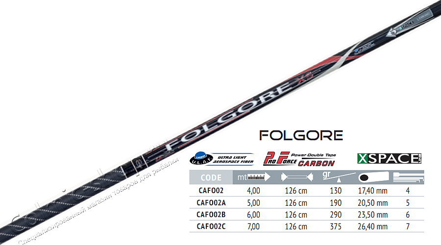
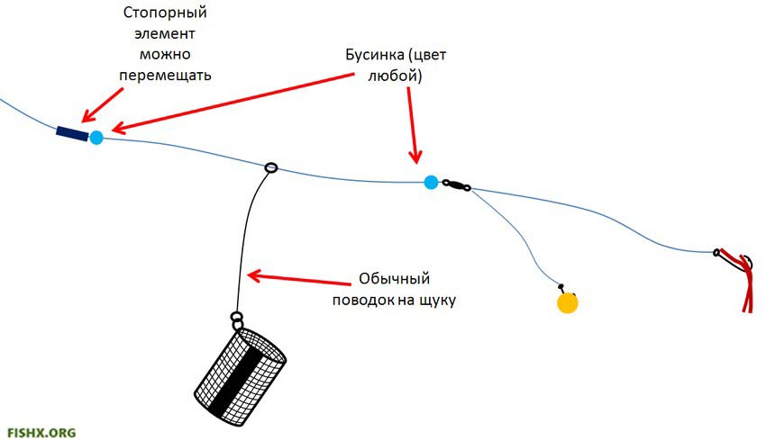
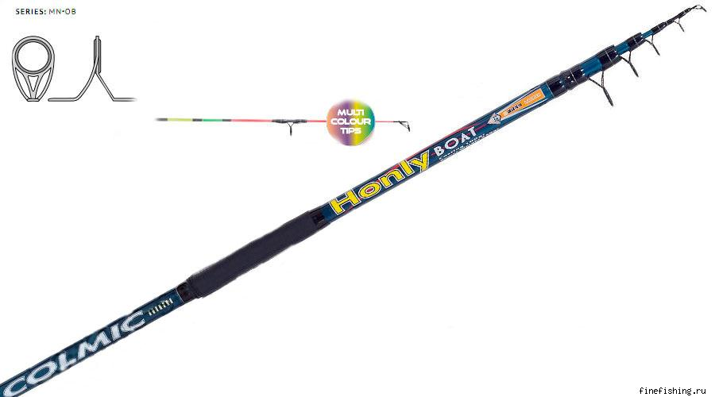
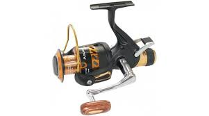
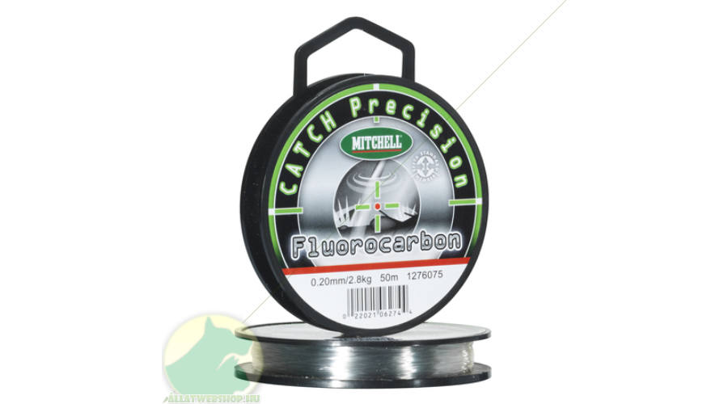
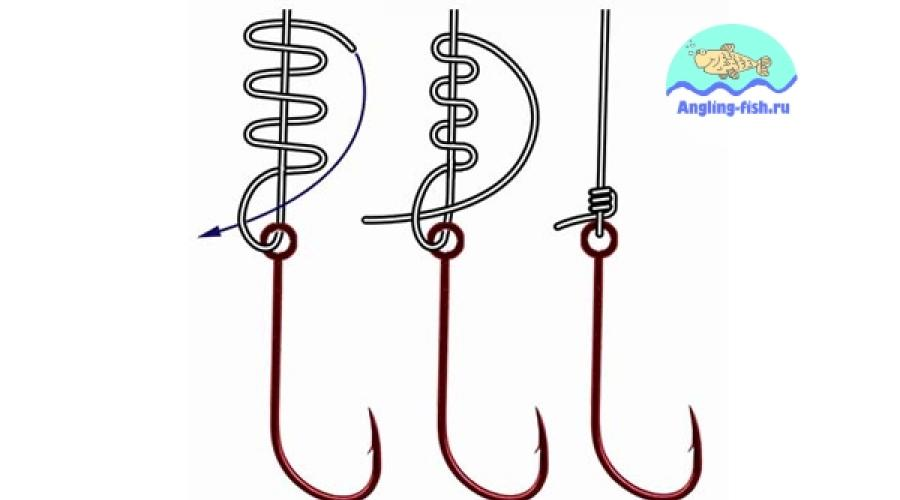

| Поплавочная удочка | Фидер | Нахлыстовое удилище | Катушки | Леска | Крючки | Грузила | Поплавки |
| Кормушки | Поводки | Сигнализатор поклевки | Подставки для удочек | Садок | Подсак | Приманки | Прикормка |
| Ящик | Стул | Фонарик | Тряпка | Рюкзак |





